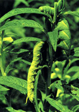

| Home |
| GINGELLY |
| 1. Leaf Webber |
| 2. Sphinx Moth |
| 3. Gall Fly |
| 4. Leaf Hopper |
| 5. Pod Bug |
| 6. Aphid |
| questions |
| Download Notes |
PESTS OF GINGELLY :: Major Pests :: Sphinx Moth
2. Sphinx moth: Acherontia styx (Sphingidae: Lepidoptera)
Distribution and status: India, Sri Lanka, Burma, Indonesia, Philippines, Malaysia.
Host range: Sesame, Potato, Brinjal and Jasmine
Damage symptoms: The damage is caused by the larvae which feed voraciously on leaves and defoliate the plants. The moth is also harmful as it sucks honey from the honey combs in apiaries.
 |
Bionomics: The adult moth is giant hawk moth, brownish with a characteristic skull marking on the thorax and violet yellow bands on the abdomen. Hind wings yellow with black markings. It lays globular eggs singly on the under surface of leaves. The egg period is 2-5 days. The larva is stout, green with yellowish oblique stripes and curved anal horn. The larval period lasts for 60 days. It pupates in earthern cocoon in soil. The pupal period lasts 14-21 days and 7 months in summer and winter respectively. This insect completes three generations per year.
Management
- Hand-pick the larvae in the initial stages of attack and destroy by keeping in kerosene oil.
- Plough the field during winter to expose the hibernating larvae.